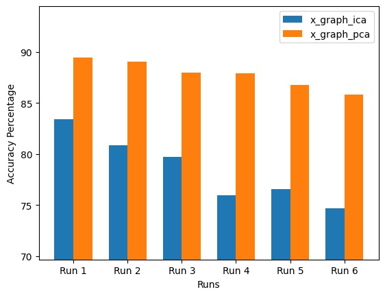
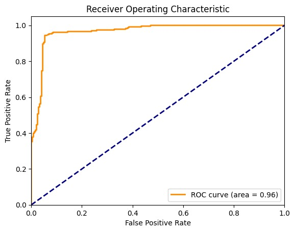
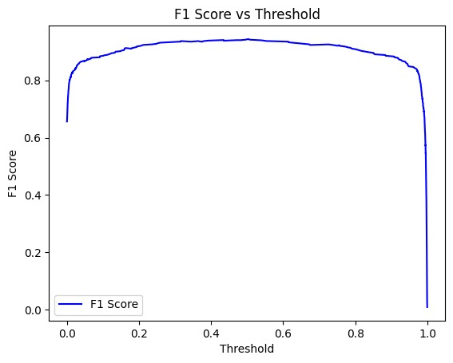

Objective
Develop a machine learning model to accurately detect breast cancer from mammogram image data.
Domain: Breast cancer detection using machine learning techniques on image data. The goal is to classify images as benign or malignant.
Data Overview
Model Comparison
PCA works better than ICA in all cases for dimensionality reduction.
Models Used
- XGBOOST
- K Nearest Neighbour Classification
- Random Forest
- Logistic Regression
- Decision Tree
- Convolutional Neural Network
- Naïve Bayes
- Hierarchical Clustering
Hyper-Parameter Tuning Methods
- Grid Search
- Bayesian Optimization
Best Model
The Bayesian Optimization technique surfaced as the best model with an exemplary cross-validation score. The model's optimal parameters include a 'max_depth' of 8, 'n_estimators' approximately 175, 'gamma' around 0.015, 'learning_rate' close to 0.233, and a 'colsample_bytree' ratio of 1.0.
 Predicted Outputs
With the threshold adjusted to increase the rate of False Positives, the model demonstrates a robust predictive capability as evidenced by the Log Loss Curve. This suggests a careful balance between sensitivity and specificity, prioritizing the detection of potential malignancies.